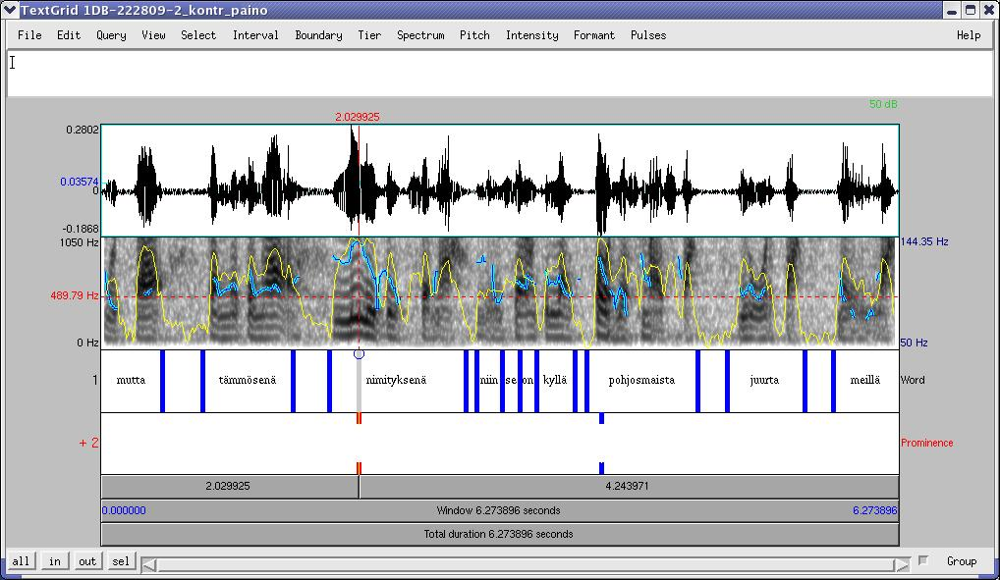

Jokin puheen yksikkö, joka erottuu ympäristöstään jollakin tavalla korosteisena eli prominenttina. Prominenssiyksikköä tai siitä Puh-editorilla periytettyjä aliyksiköitä voidaan käyttää mm. ns. lausepainon merkitsemiseen.
Rajataan auditiivisin perustein. Koska prominenssi on kuulohavaintoon perustuva käsite, akustisia analyyseja (esim. perustaajuus- ja intensiteettikäyrää) ei välttämättä tarvitse annotointivaiheessa käyttää, mutta niiden avulla voidaan saada vahvistusta havaitulle prominenssivaikutelmalle (ks. esim. kuva 5.1). Mikäli akustisten kuvausten käyttäminen prominenssin annotoinnissa halutaan metodisista syistä kokonaan kieltää (esim. halutaan koemielessä kerätä useiden annotoijien subjektiiviset kuulonvaraiset arviot saman puhenäytteen prominenteista kohdista), kannattaa prominenssiyksiköstä periyttää uusi aliyksikkö, jonka määritelmään kielto merkitään.
|

|
Mikäli prominenssin vaikutusalaksi katsotaan tietyntyyppinen yksikkö (esim. tavu, sana tms.), pitää vastaavan annotaatiokerroksen olla olemassa.
Prominentiksi voidaan kuitenkin merkitä myös mikä tahansa puheen jakso. Kun annotaatiokerroksia tulee jälkeenpäin lisää, prominenssin vaikutusalan voidaan silloin ajatella koskevan kaikkia kyseisellä ajanjaksolla esiintyviä muita yksiköitä.
Ei määritelty erillistä kuvausta, mutta nimikkeeksi voi kirjoittaa
vapaata tekstiä. Prominenssiyksikölle voi halutessaan antaa nimikkeeksi
esimerkiksi kuvauksen prominenssin tai painollisuuden asteesta. Mikäli
käytetään tiettyä sovittua asteikkoa, voidaan Puh-editorissa periyttää
prominenssiyksikölle aliyksikkö, jolle erikseen määrätään esim. ominaisuus
degreeOfProminence ja tälle lista haluttuja arvoja. Samoin
toimitaan, jos halutaan määritellä erilaisia prominenssityyppejä esim.
funktion tai vaikutusalan mukaan.
Sanapaino eli sanan (leksikaalisesti) painollisin osa. Stress-yksikkö on Prominence-yksikön aliyksikkö.
Sanapainolliseksi voidaan merkitä jokin sanaa pienempi yksikkö tai puheen jakso, yleensä tavu. Sanapainoyksikköä ei saa rajata niin, että se ulottuu saman puhujan kahden sanayksikön alueelle.
Sanapainon merkintä vaatii ainakin olemassaolevan sanakerroksen ja yleensä myös jonkin sanaa pienemmän yksikön, esimerkiksi tavun annotaatiokerroksen.
Ei määritelty erillistä kuvausta, mutta nimikkeeksi voi kirjoittaa vapaata tekstiä. Stress-yksikölle voi halutessaan antaa nimikkeeksi esimerkiksi kuvauksen painollisuuden asteesta (esim. pääpaino 1, sivupaino 2). Mikäli käytetään tiettyä sovittua asteikkoa, voidaan Puh-editorissa periyttää Stress-yksikölle aliyksikkö, jolle erikseen määrätään esim. ominaisuus degreeOfStress ja annetaan tälle lista haluttuja arvoja.